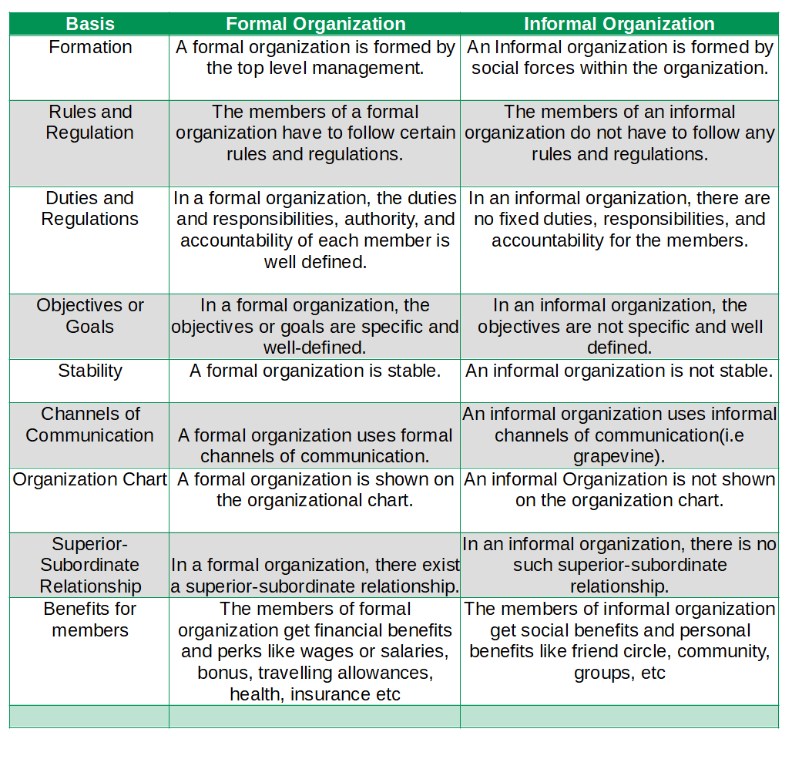
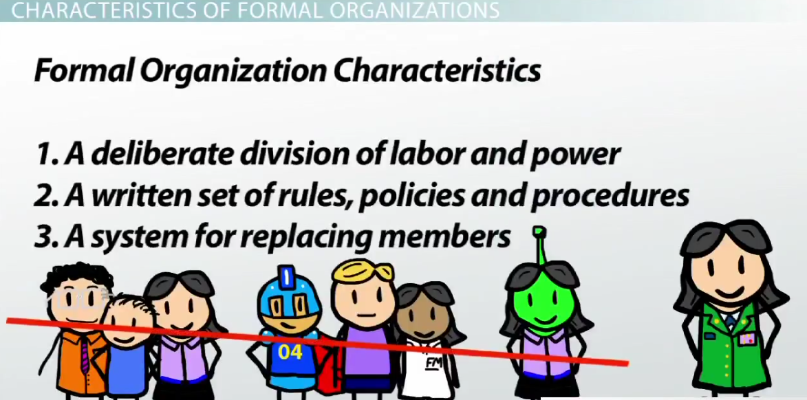

I Love Everything That Makes Me More Human.
Find out Major 9 difference between Formal and informal organization(Formal Organization vs Informal Organization)

What is the main difference between formal organization and informal organization?
The main difference between formal organization and informal organization is based on their formation. A formal organization is formed by the top level management whereas An Informal organization is formed by social forces within the organization.
| Basis | Formal Organization | Informal Organization |
| Formation | A formal organization is formed by the top level management. | An Informal organization is formed by social forces within the organization. |
| Rules and Regulation | The members of a formal organization have to follow certain rules and regulations. | The members of an informal organization do not have to follow any rules and regulations. |
| Duties and Regulations | In a formal organization, the duties and responsibilities, authority, and accountability of each member is well defined. | In an informal organization, there are no fixed duties, responsibilities, and accountability for the members. |
| Objectives or Goals | In a formal organization, the objectives or goals are specific and well-defined. | In an informal organization, the objectives are not specific and well defined. |
| Stability | A formal organization is stable. | An informal organization is not stable. |
| Channels of Communication | A formal organization uses formal channels of communication. | An informal organization uses informal channels of communication(i.e grapevine). |
| Organization Chart | A formal organization is shown on the organizational chart. | An informal Organization is not shown on the organization chart. |
| Superior-Subordinate Relationship | In a formal organization, there exist a superior-subordinate relationship. | In an informal organization, there is no such superior-subordinate relationship. |
| Benefits for members | The members of formal organization get financial benefits and perks like wages or salaries, bonus, travelling allowances, health, insurance etc | The members of informal organization get social benefits and personal benefits like friend circle, community, groups, etc |
Difference Between Formal Organization and Informal Organization on the basis of Formation
A formal organization is formed by the top level management whereas An Informal organization is formed by social forces within the organization.
Difference Between Formal Organization and Informal Organization on the basis of Rules
The members of a formal organization have to follow certain rules and regulations whereas The members of an informal organization do not have to follow any rules and regulations.
Difference Between Formal Organization and Informal Organization on the basis of Duties
In a formal organization, the duties and responsibilities, authority, and accountability of each member is well defined whereas In an informal organization, there are no fixed duties, responsibilities, and accountability for the members.
Difference Between Formal Organization and Informal Organization on the basis of Goals
In a formal organization, the objectives or goals are specific and well-defined whereas In an informal organization, the objectives are not specific and well defined.
Difference Between Formal Organization and Informal Organization on the basis of Goals
A formal organization is stable whereas Informal organization is not stable.
Difference Between Formal Organization and Informal Organization on the basis of Channels of Communication
A formal organization uses formal channels of communication whereas An informal organization uses informal channels of communication(i.e grapevine).
Difference Between Formal Organization and Informal Organization on the basis of Organization Chart
A formal organization is shown on the organizational chart whereas An informal Organization is not shown on the organization chart.
Difference Between Formal Organization and Informal Organization on the basis of Superior-Subordinate Relationship
In a formal organization, there exist a superior-subordinate relationship whereas In an informal organization, there is no such superior-subordinate relationship.
Difference Between Formal Organization and Informal Organization on the basis of Benefits for members
The members of formal organization get financial benefits and perks like wages or salaries, bonus, travelling allowances, health, insurance etc whereas The members of informal organization get social benefits and personal benefits like friend circle, community, groups, etc
Formal Organization
The formal Organization has a structure that is consciously designed to enable the people of the organization to work together for accomplishing common objectives. Thus, formal Organization is more or less arbitrary structure to which the individual must adjust. It tells individual members to do certain things in specific manner to obey orders from designated individuals and to cooperate with others. Coordination also proceeds according to a prescribed pattern in the formal Organization structure.
The formal Organization is built on certain principles, i.e. around four key pillars, namely, (a) division of labor, i.e. the whole work is divided into a number of small operations and each operation is performed by a different person so that there is maximum specialization; (b) scalar and functional processes, which implies that the Organization grows both vertically and horizontally, (c) structure, which refers to the overall arrangement ensuring proper balance between different parts of the organization and secures the execution of all operations and the achievement of organizational objectives; and (d) span of control, refers to the number of subordinates directly reporting and accountable to one superior. According to Koontz and Weitirich- Formal organization means the intentional structure of roles in a formally organized enterprise.
Formal Organization
Informal Organization
Informal organizations refers to the relationship between people in the organization based on personal attitudes, emotions, prejudices, likes, dislikes, etc. These relations are not developed according to procedures and regulations laid down in the formal organization structure; generally large formal groups give rise to small informal groups. These groups are not preplanned; rather develop automatically/spontaneously according to the organizational environment.
No organization operates completely by the book. In real settings, the relationship that actually exists among employees in an organization does not follow formal lines. Employees in one department know those in other departments. They may need information about the acts of indiscipline in a particular department or some advice on delicate matters regarding the handling of jobs, etc. The associations of persons, in such cases, come under informal organization. These associations may be among employees on the same level of the hierarchy or on different levels.
The communication in informal organization is very fast and efficient. If handled properly, it helps in forming the activities of the organization very efficiently and effectively. Informal organization may act to fill gaps in management‘s abilities. It also helps in mediating breaches in understanding between the management and the employees. Informal organizations influence productivity and job-satisfaction. It delineates avenues of promotion and points out ‗dead-end‘ jobs. It makes for closer cooperation and higher morale. It brings to the members of a formal organization a feeling of belongingness, of status, of self-respect/esteem, and of gregarious satisfaction.
Informal Organization
Hey there, I'm Nischal.
I am a student, a developer and I specialize in
standards-based Web Development(Django, JS, HTML, CSS ) and ML/DL.
I love Everything that makes me more Human. While
not Coding, I play and/or watch football.
Copyright text 2020 by Nischal!!
Newsletter
A rover wearing a fuzzy suit doesn’t alarm the real penguins. Then What Alarms The Penguins. Subscribe Me To Find Out.
Follow Me